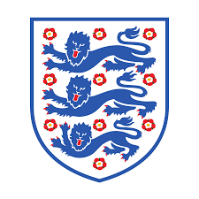

História de Doha, capital do Catar
![]()
História de Doha, capital do Catar
Um século atrás, em 1922, este pequeno Estado do Golfo Pérsico de três milhões de habitantes e menos de
12.000 km² era uma terra praticamente desabitada — um
A bola da Copa do Mundo de 2022 é a Al Rihla. O nome significa “a viagem” em árabe.
O mascote da Copa do Mundo FIFA 2022 foi apresentado durante o sorteio dos grupos, no início do
ano, e foi batizado La'eeb. De acordo com a organização, o nome significa “jogador
super-habilidoso” em árabe. É um personagem inspirado no lenço usado na cabeça das pessoas do
mundo árabe.
humilde assentamento de pescadores e
catadores de
pérolas, no qual a maioria dos moradores eram nômades viajantes dos vastos desertos da Península
Arábica.
Apenas alguns cidadãos com mais de 90 anos poderiam se lembrar hoje das terríveis dificuldades
econômicas enfrentadas nas décadas de 1930 e 1940, depois que
os japoneses inventaram o cultivo de
pérolas, as produziram em massa e arruinaram efetivamente a economia do Catar.
Naquela década, o Catar perdeu até 30% da sua população, que partiu em busca de oportunidades no
exterior. Dez anos depois, em 1950, não havia mais de 24 mil
habitantes, de acordo com a
Organização das
Nações Unidas (ONU).
Mas a economia do país estava prestes a dar uma virada radical. Eles haviam encontrado seu milagre: uma
das maiores reservas de petróleo do mundo. Foi o ponto
de partida para encher os cofres do Catar em
um
ritmo frenético a partir da segunda metade do século 20, e seus moradores se tornarem alguns dos
cidadãos
mais ricos do mundo.
As três mudanças que transformaram este país em um dos mais ricos do planeta

1. A descoberta do petróleo em 1939

2. A descoberta de gás natural

3. O golpe palaciano de 1995
Informações da Copa 2022

Bola da Copa
A bola da Copa de 2022 custa R$ 179,99 em uma versão de treinamento, R$ 249,99 em uma versão
liga e R$ 999,99 na versão Pro.
Há também a minibola, que custa apenas R$ 99,99.

Mascote da Copa

Grupos da Copa do Mundo 2022

10 Seleções Favoritas a Vencer


Brasil
Bélgica
Argentina
França
Inglaterra

Espanha
Holanda
Portugal
Dinamarca
Uruguai